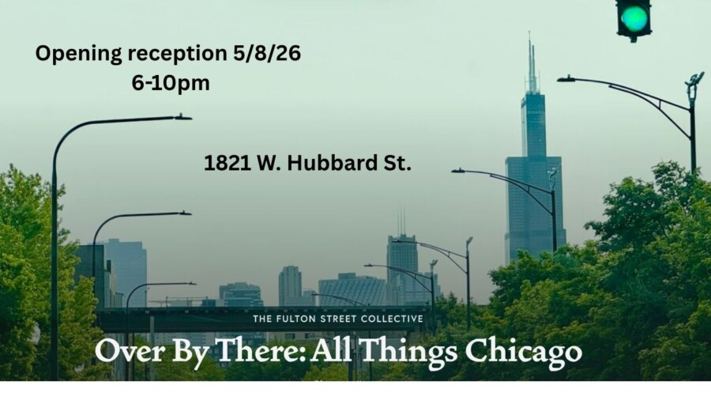

OVER BY THERE: ALL THINGS CHICAGO
Fulton Street Collective presents OVER BY THERE: ALL THINGS CHICAGO Art Opening on Friday May 8th, from 6-10pm.
Curated by Ryan Miller
What is it that makes Chicago unique? To some, it’s tall buildings and old memories of mobsters. To others, it’s sports teams and Italian beef sandwiches. Come to opening night, Friday May 8, and see our artistic vision of all things Chicago.
RESERVATIONS RECOMMENDED: https://www.eventbrite.com/e/1988683682428
Fulton Street Collective
1821 W. Hubbard
6pm – 10pm
Free Parking